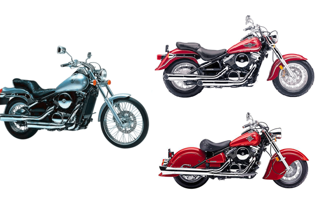
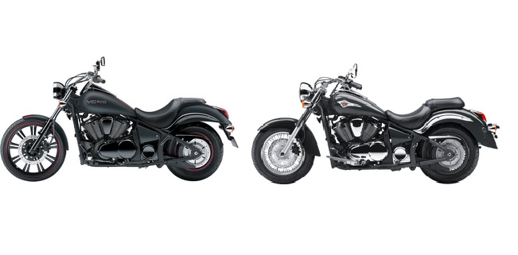
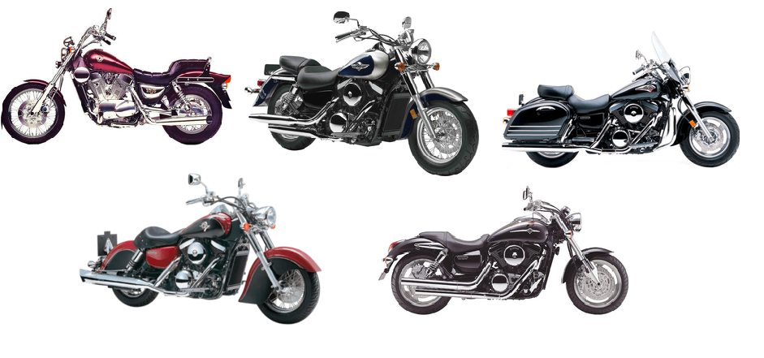
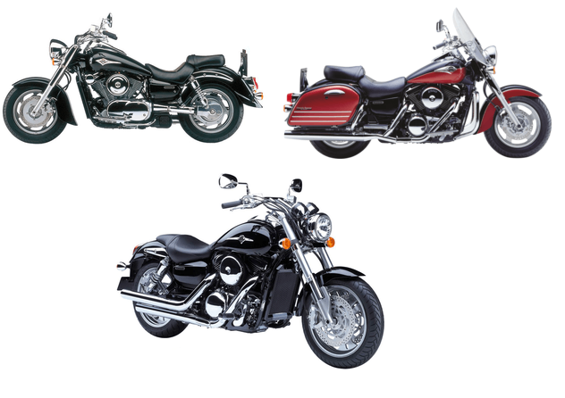
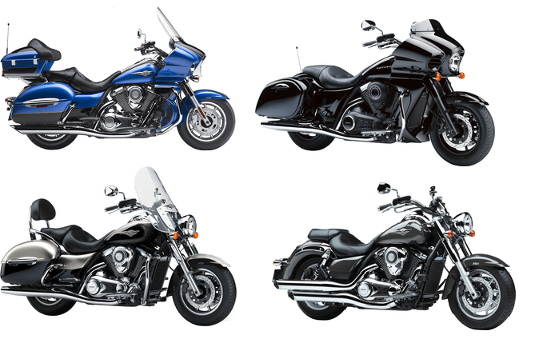
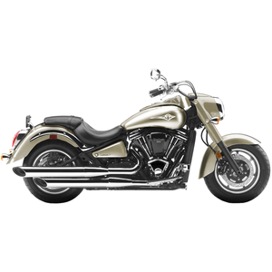

Egy kattintással letöltheted a szükséges adatlapokat, használati utasításokat és szervízkönyveket!  VN800 Szervízkönyv Használati utasítás Drifter Használati utasítás  VN900 Classic Szervízkönyv Custom Szervízkönyv Custom Használati utasítás Classic adatlap Custom adatlap  VN1500 VN15 Szervízkönyv Classic Szervízkönyv Nomad, Tourer Szervízkönyv Mean Streak Szervízkönyv Drifter Szervízkönyv Classic adatlap  VN1600 Classic Szervízkönyv Nomad, Tourer Szervízkönyv Mean Streak Szervízkönyv Nomad, Tourer kézikönyv  VN1700 Nomad, Tourer Szervízkönyv Voyager Szervízkönyv Voyager Használati utasítás Vaquero Használati utasítás Classic Adatlap Nomad, Tourer Adatlap Voyager Adatlap  VN2000 Használati utasítás